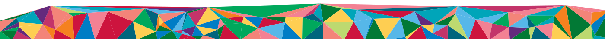

Raclette Point Original
Švýcarský raclette na dosah.
Síť míst, kde se škrábe Swiss AOP sýr z mlékárny Laiterie d’Orsières v kantonu Valais. Podle polohy vás navedeme k nejbližšímu Pointu.

Spolupráce
Proč s námi spolupracovat
Sýrová show, která přitahuje lidi
Vůně taveného AOP sýra, jiný styl grilování a atmosféra Švýcarska. Zážitek, kvůli kterému se hosté vracejí.
Bez kvalifikovaného kuchaře
Díky nerezovým troubám a grilům TTM zvládne servis zaškolený člen obsluhy nebo baru.
Marže, která dává smysl
Švýcarské sýrové speciality mají vysokou vnímanou hodnotu. Po zaškolení servírujete menu na míru provozovně.
Rychlý start
Kuchyň se nepřestavuje. Všechno připravíme na míru k provozu, který už máte.
Srdce
Partnerství a srdce
Nejsme klasická síťová franšíza. Neplatíte statisícové ani milionové vstupní poplatky za licenci.
Důvěra na dlouho
Hledáme partnery, kteří dělají svou práci s láskou, srdcem a profesionálně.
Dostupný vstup
Platíte za skutečné vybavení a příslušenství na míru, za zaškolení a za startovací branding.
Fér měsíční poplatek
Měsíční partnerský poplatek se domlouvá individuálně, podle velikosti Pointu, typu provozovny a lokality.
Osobní přístup
Jste partner, se kterým rozvíjíme švýcarskou gastro kulturu. Ne číslo v tabulce.
Zázemí
Co od nás získáte
Když se stanete součástí rodiny Raclette Point Original, máte kompletní zázemí a know-how.
Technologie a vybavení
Celonerezová raclette trouba na 8 až 16 porcí, nebo originální švýcarský gril TTM. K tomu náčiní, desky, stoly a branding.
Sýry přímo od zdroje
Pravidelné dodávky originálních Swiss AOP sýrů a certifikovaných fondue směsí za velkoobchodní ceny.
Akademie za jeden den
Personál zaškolíme během jediného dne a předáme certifikaci Raclette Master.
Marketing a mapa
Point zařadíme na oficiální mapu. Web ukáže lokalitu, raclette menu a informace o místě.

Příběh
Milan rakluje s takovou elegancí, ladností a láskou, jako hrál Roger Federer tenis.
Jak vzniká kvalita
Nejdůležitější surovinou je kravské mléko. Křišťálově čistá voda z alpských ledovců spolu s horskými květinami a bylinami se propíše do chuti sýra.
Kulaté bochníky jsou z nepasterizovaného horského mléka a zrají nejméně tři měsíce. My distribuujeme Swiss AOP z mlékárny Laiterie d’Orsières v kantonu Valais.
Čísla
Z mléka bochník
Přibližně tolik kravského mléka je potřeba na jeden bochník raclette.
Minimální zrání kulatého bochníku z nepasterizovaného horského mléka.
Na ně padne asi 100 kg potravy a 85 litrů vody.
V průměru více než dvě kila raclette na obyvatele Švýcarska za rok.